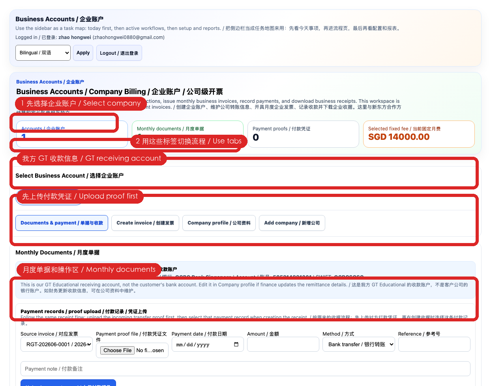
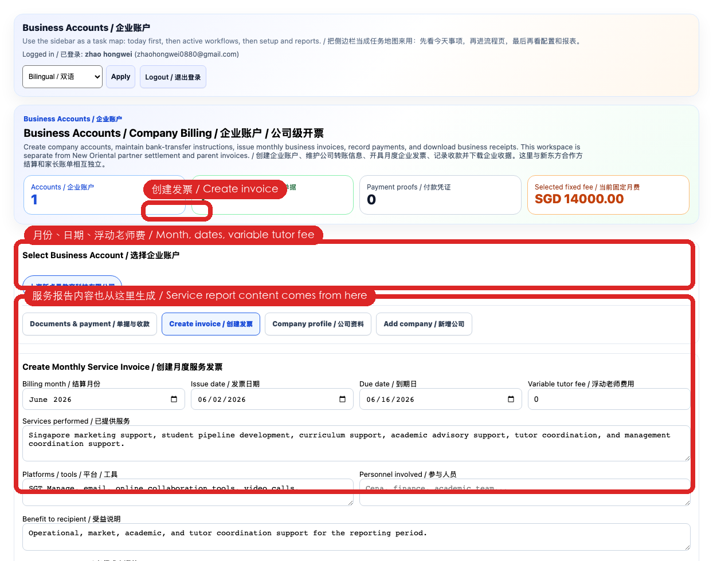
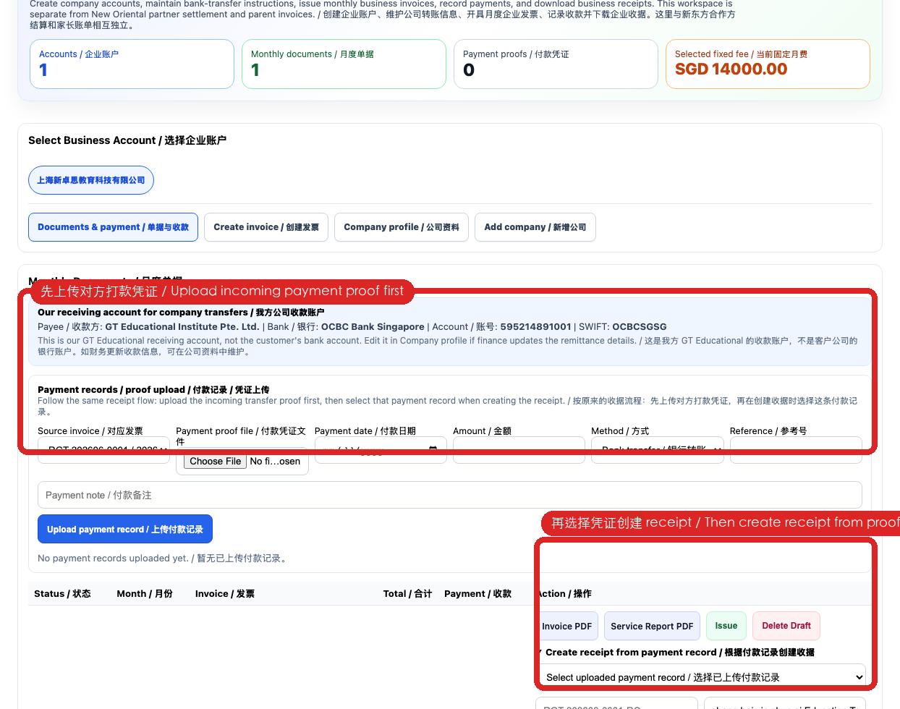
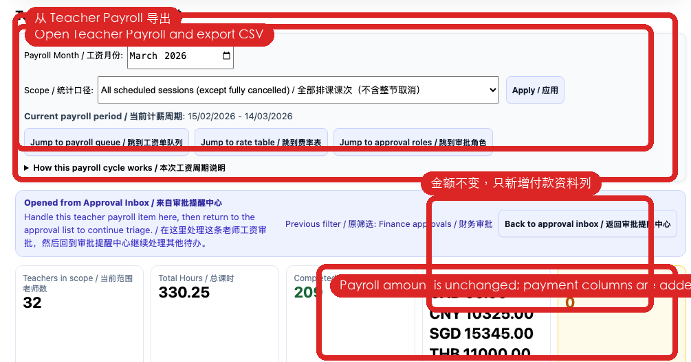
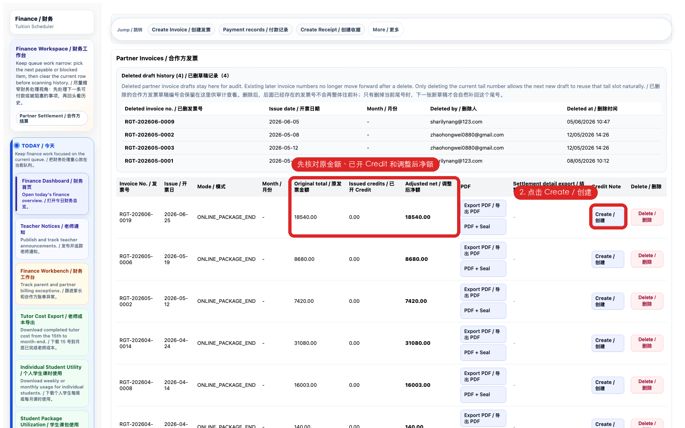
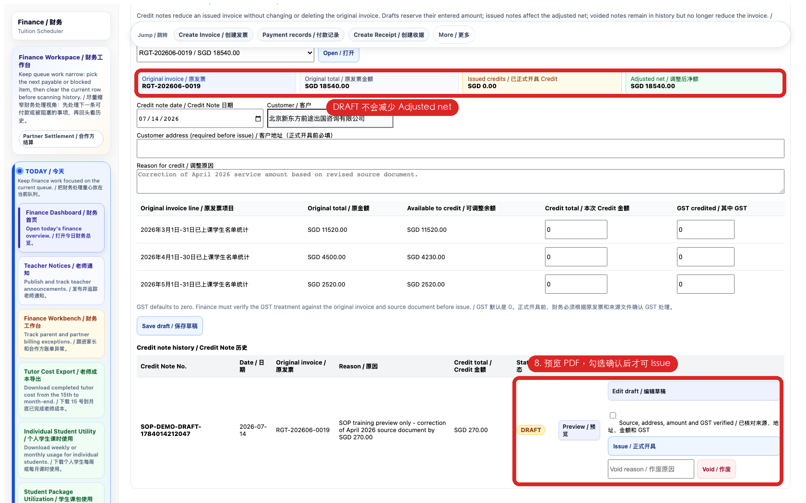
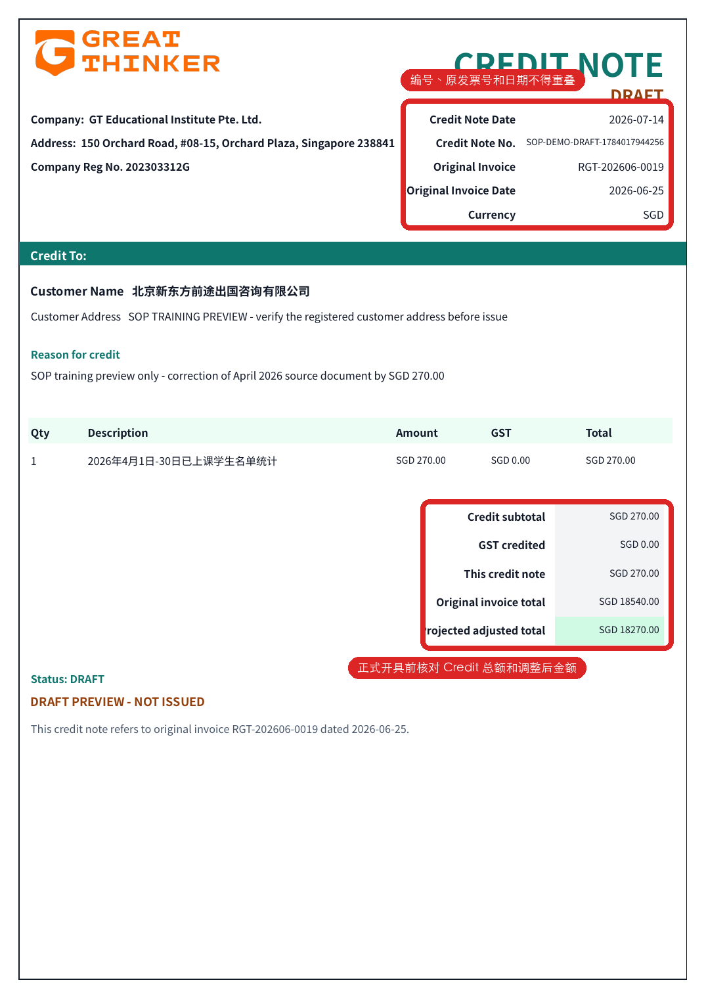

STEP 1
财务每日起点
从财务工作台确认审批、待收款、待开收据、老师工资、报销和合作方结算压力点。
 真实系统截图：按本页说明核对入口、状态和最终结果。
真实系统截图：按本页说明核对入口、状态和最终结果。按队列完成收款、付款、结算和审计闭环
从财务工作台确认审批、待收款、待开收据、老师工资、报销和合作方结算压力点。
真实系统截图：按本页说明核对入口、状态和最终结果。确认公司主体、账单对象和服务项目后创建发票；付款后建立收据并核对关联。

真实系统截图：按本页说明核对入口、状态和最终结果。核对公司、地址、币种、日期、项目、税务口径和金额。保存后检查 PDF。

真实系统截图：按本页说明核对入口、状态和最终结果。付款凭证、金额、日期和收款账户一致后创建收据；不得用收据代替付款核验。

真实系统截图：按本页说明核对入口、状态和最终结果。本地老师核验 PayNow，海外老师核验 Wise；历史 Bank Transfer 不作为新录入默认方式。

真实系统截图：按本页说明核对入口、状态和最终结果。从候选记录到结算记录、账单工作区、发票和收款逐层核对；费率异常先退回业务负责人。

真实系统截图：按本页说明核对入口、状态和最终结果。选择原发票、填写原因和地址、保存明细、复核总额后签发；错误草稿可改，已签发只能按规则作废。

真实系统截图：按本页说明核对入口、状态和最终结果。在 Finance Documents 查询发票、收据和已签发/作废 Credit Note；导出前核对状态范围。

真实系统截图：按本页说明核对入口、状态和最终结果。